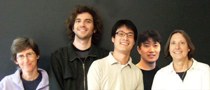

News Archives : 2008 : Piggy-backing Meiotic Chromosomes
by Nancy Kleckner and Romain Koszul
June 27, 2008

The co-authors (left to right): M. Prentiss, R. Koszul, K.P. Kim, S. Kameoka, and N. Kleckner
Movement plays important fundamental roles in basic chromosomal processes. Motion is most obvious when organized chromosomes congress and segregate at mitosis. However, other types of chromosomal movement occur throughout the cell cycle: disparate chromosomal loci colocalize during DNA replication, DNA repair, gene transcription and several epigenetic phenomena and locus-specific movements correlate with and are essential for activation of gene expression. Motion plays also an important role during meiosis, where parental chromosomes must recognize and pair with each other. Dynamic and regulated movements have been described during the prophase of a handful of organisms, notably fission yeast. We have investigated movement of chromosomes during meiotic prophase of budding yeast.
Using a combination of in vitro and in vivo approaches, we have described the behavior of whole chromosomes during the pachytene stage of prophase and have been able to characterize in detail the mechanism responsible for their movements. Our observations support a model in which telomere/nuclear envelope meiosis specific complexes occasionally bind to nucleus-hugging actin cables that extend into the global cytoskeleton network. The dynamic movements of actin cables would displace the attached complexes thus the corresponding chromosome, in a piggy backing like mechanism. These actin cables and in vitro pachytene chromosomes have similar persistence lengths, which may contribute to magnify the dynamic of what we described as an integrated mechanical system: the physical properties and interconnections of all components contribute to the observed phenomena. For instance, we showed that chromosomes move in a coordinated way, the nature of which is currently unclear although we propose it is due to non-specific interconnections between the chromosomes. This system presents a unique opportunity to investigate the mechanical transduction of information between cytoplasm and chromosomes. The role of chromosome motion, a shared feature of the prophase of diverse organisms, remains under investigation, but may contribute to removal of inappropriate entanglements between homologs, via the generation of a mechanical stress applying onto these interconnections, as proposed in a second paper to be published in PLoS Genetics (in collaboration with the laboratory of Eric Alani at Cornell University).
In addition, we proposed that programmed changes in the chromatin status account for the differences in chromosome dynamic during the zygotene and pachytene stages of prophase: variations in chromatin compaction along the chromosome axis would affect the stiffness of chromosomes, and thus their bending capacities. If the state of chromatin governs two central biological phenomena of meiosis, this would emphasize the legitimacy of mechanical models to describe chromosomal behavior (Kleckner et al., 2004).